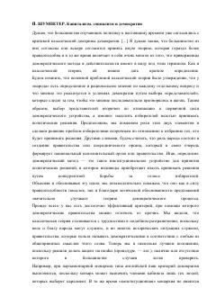

KSKapitalizm, sotsializm va demokratiya o'rtasidagi o'zaro bog'liqlik va siyosiy jarayonlar tahlili.
Ushbu asarda muallif kapitalizm, sotsializm va demokratiya o'rtasidagi murakkab munosabatlarni tahlil qiladi. Kitobda klassik demokratiya nazariyasining tanqidi va siyosiy yetakchilikning jamiyatdagi o'rni chuqur ilmiy asoslab berilgan.